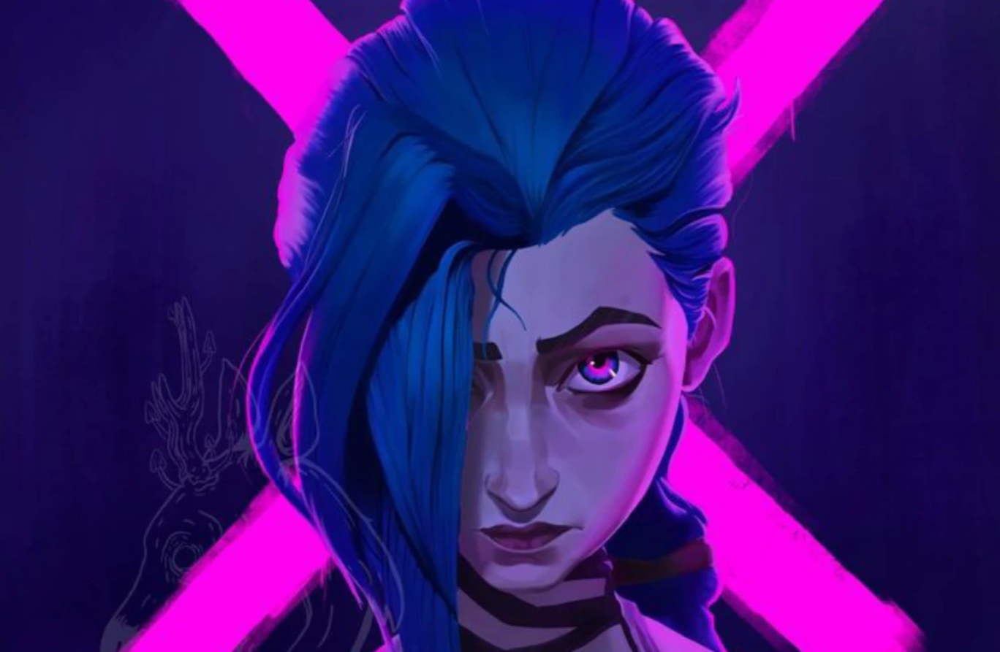

Arcane, a série animada de League of Legends da Netflix,
está retornando para uma segunda temporada.
A notícia foi anunciada durante o evento League of Legends:
Wild Rift Global Championship 2022, com um trailer que
ofereceu aos fãs um vislumbre do que está por vir.
A segunda temporada de Arcane seguirá as irmãs Vi e Jinx
enquanto elas se envolvem em uma guerra entre as cidades
de Piltover e Zaun. A temporada também explorará novos
personagens e histórias, como a ascensão do Protetor de Piltover, Jayce.

|